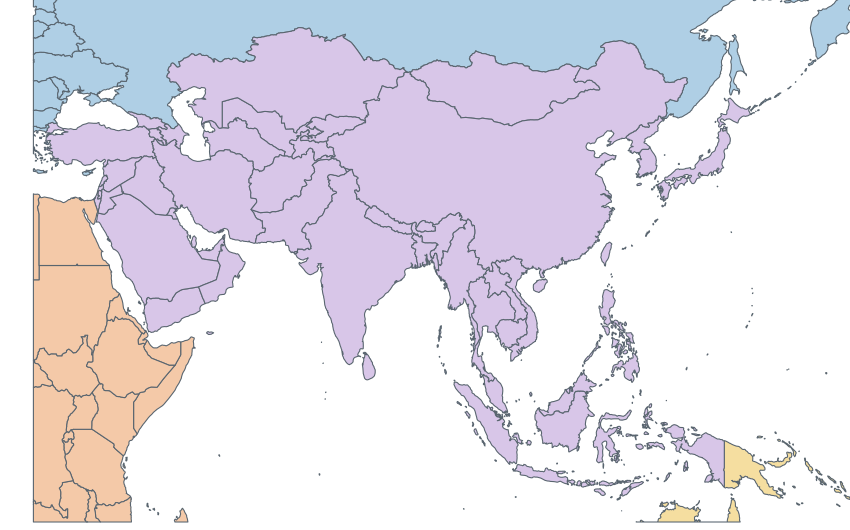

Torna a l’exercici d’Àsia
·
Llistat de països i capitals
Mapa d’Àsia

Mapa de
Natural Earth
(domini públic), ampliat i retallat aproximadament pel paral·lel 60° nord per mostrar millor la resta d’Àsia.
Imprimeix